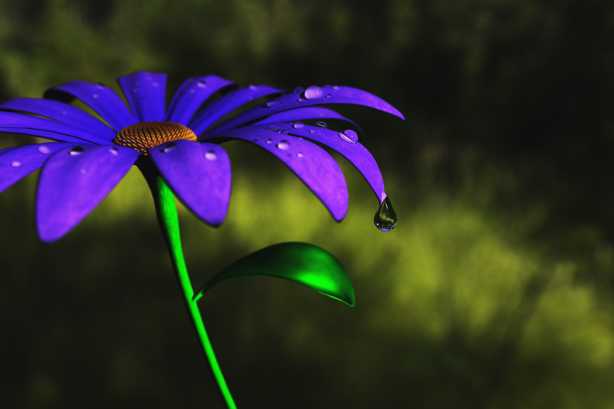
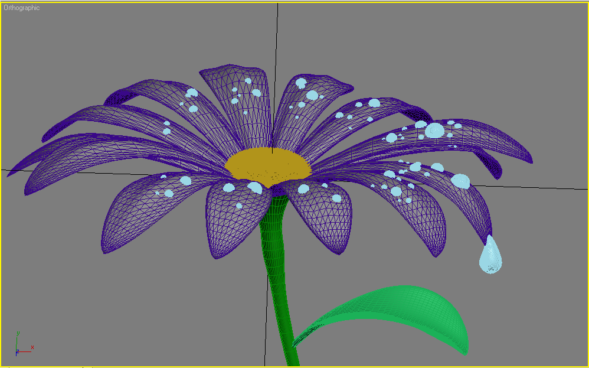
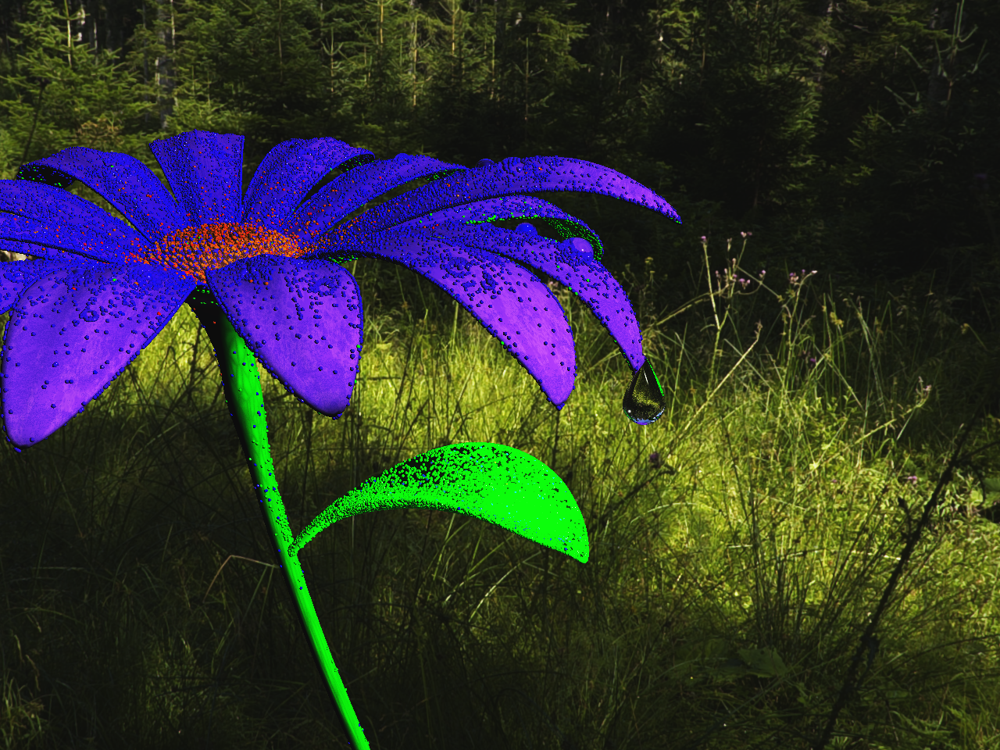
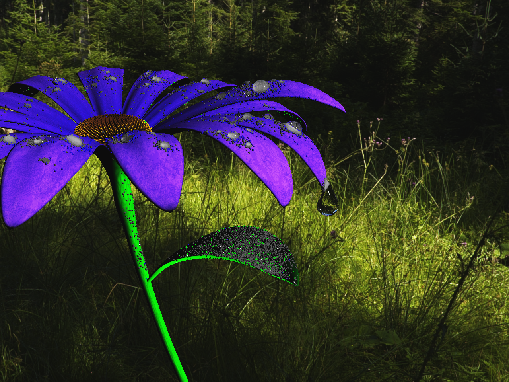
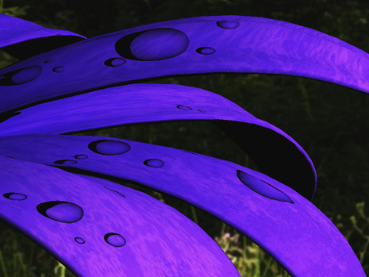
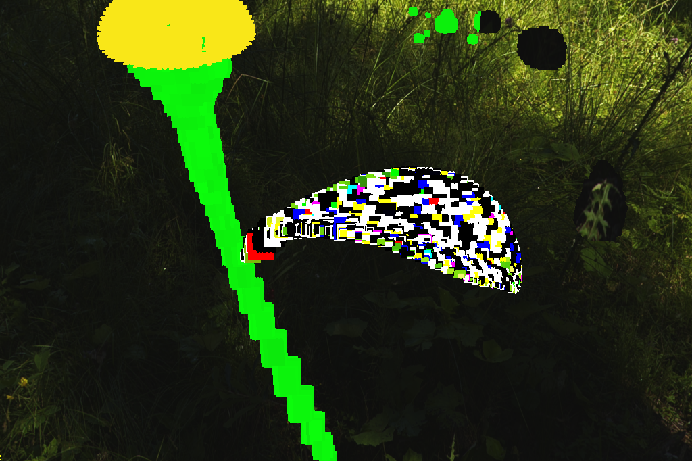
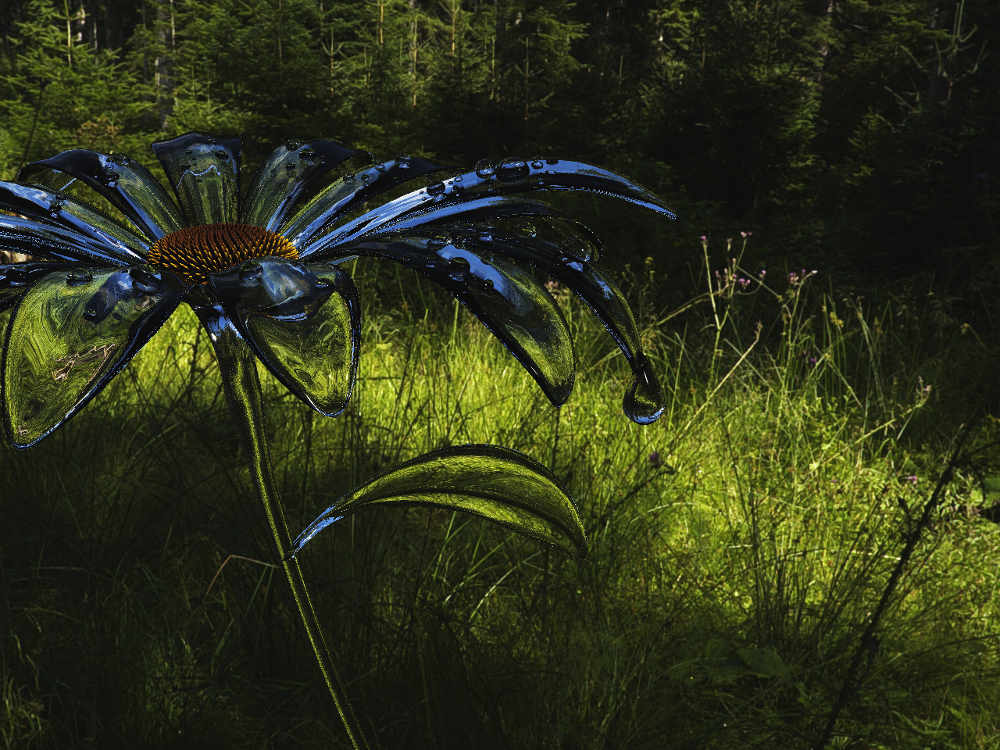
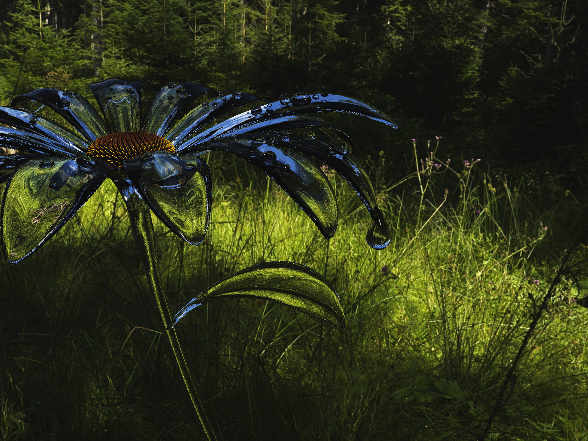

In our final project we wanted to blablabla. For all images, click on them to show them in full size.
Our inspiration was this photo that Hallgeir took of a flower after a rain shower. In particular, we wanted to capture some of the complex lighting in the raindrops like the caustics, highlights and shadows, as well as producing a good looking image.
Here we present the results from the rendering and a description of the scene.
We see caustics from the photon map in the rain drops, as well as indirect illumination on the leaf (a little from the caustics, but mostly from the global photon map). See the photon map section for more details.
Something that is not very obvious from the image is that we use slightly glossy reflections in the rain drops; but the shininess is quite high, so it's hard to see. Another effect we added is depth of field. We wanted to have a pretty visible effect; the reason is explained in the "Depth of field" section below.
The flower is modelled in 3ds Max, and consists of 248768 triangles in total. Each part (the stem, petals, center, leaf and raindrops) were stored separately for easier texturing.
All of the textures on the flower is procedurally generated. The leaf and stem have a faint cellular texture, with some added perlin noise on top. However, the environment map is loaded from a HDR texture and tone mapped.
We implemented fresnel reflections, so that rays that hit a refractive object at a glancing angle reflects parts of the ray.
For lighting of the scene, we implemented a circular directed area light which had the role as the sun. We could have used a point light very, very far away, but then generating the photon maps would take a very long time as most photons would miss the surfaces. A directed area light solves this by shooting all photons in the direction of the light's normal within a specified radius. We also modified the direct lighting code to take the radius of the light as well as the direction into account.
We implemented photon mapping in our ray tracer for indirect lighting, including caustics. We used a caustics and a global photon map. We used the Photon_map class provided by professor Henrik Wann Jensen for storing and looking up the photons. The number of photons we used in the scene is fairly modest; 200 000 photons for caustics, and 200 000 photons for the global photon map, but we found this to be sufficient.
When building the photon maps, we loop over each light, and for each light we call our light's samplePhotonDirection() function which gives a direction according to the type of light (e.g. a point light would give a random direction, a directed light source would return the normal of the light, and so on). We also sample the light source's origin with samplePhotonOrigin() in the same way. Finally we select the power to be the light source's wattage. We scale the photon power in the end after the light source has shot out all photons, because we don't know how many photons we have to send out in order to store the specified number of photons that we specify. We then call our tracePhoton() function which will trace the photons through the scene.
In tracePhotons(), we utilize our existing Ray-scene intersection code to find out where the photon hits. We construct a ray with the origin and direction specified in the arguments, and trace it through the scene. If we get a hit, we generate a random number n between 0 and 1, and we calculate the average of the diffuse, reflective and refractive colors (hereby referred to as R_d, R_s and R_t).
Here is a quick visualization of each photon in the scene. First is the global photons, and then the caustics.
 When a camera lens is quite close to an object, for instance when doing macro photography, you get a rather narrow depth of field. We wanted to have that effect in our image, and we believe we got it pretty right. We have an aperture radius R, focus distance F, eye coordinates and camera coordinate basis u,v,w where w is the view direction. The depth of field effect is given by randomizing the origin of the eye rays, by generating a random position on a disc of a specified radius (our aperture size), and then translating the eye in the uv-plane by the two coordinates returned by the disc sample. We also had to adjust the ray direction so that it points in the direction of the point E+F*w.
We implemented glossy reflections by randomizing the direction of the outgoing ray. We sampled a hemisphere by choosing phi=acos(u1^(1/1+a)) and theta=u2*2pi, where "a" is the shininess of the material (same number as in the phong highlights). We then aligned the hemisphere with the reflective direction d_r = d - 2 * (N dot d) * N. The same process were done for refraction, just for the refractive direction instead.
Due to the nature of the scene, we made a few assumptions to render the raindrops based off reference photos. In order to achieve a gradient shadow we observed in nature, we treat the shadow rays that start within a refractive object differently. We scale the the shadow intensity by the dot product of the hit normal of the shadow ray and the direction to the light. While this method is an approximation, we felt that it contributed an interesting effect. As an additional subtle effect, we added raindrop highlights with a pointlight at the camera position. To avoid over-exposing the scene with light, this pointlight only affects the raindrop specular color.
We believe we divided the work amongst us quite evenly. However, the tasks were often interdependent so we both ended up being involved in planning and debugging.
For previous assignments, the division was approximately as follows.
We tried to render this image on a 8bit Nintendo. This is the result:
A small selection of glass flowers
 
